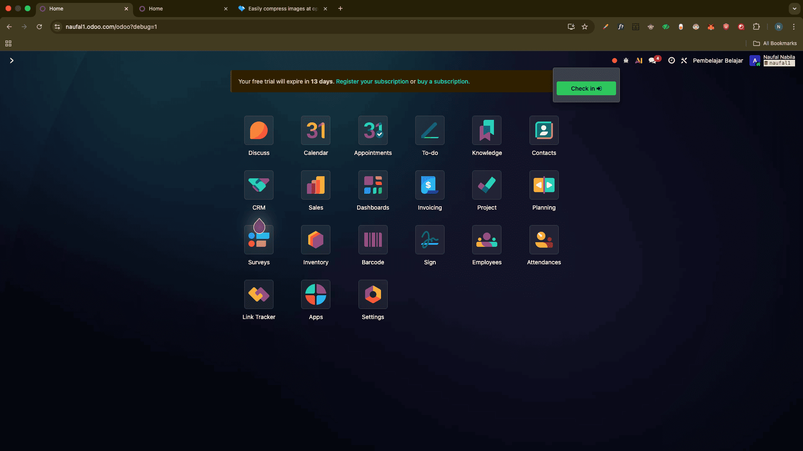
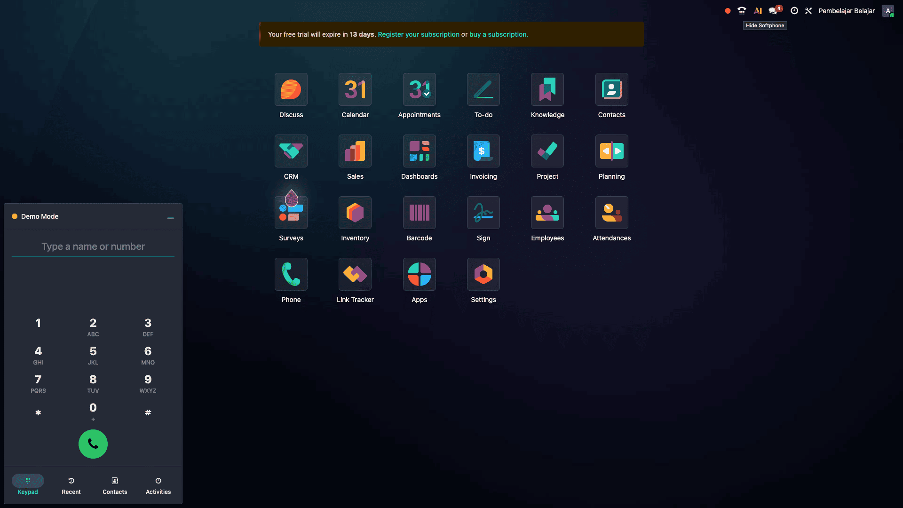
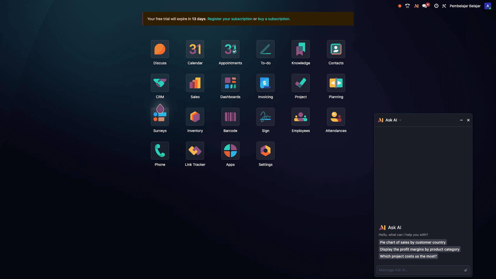
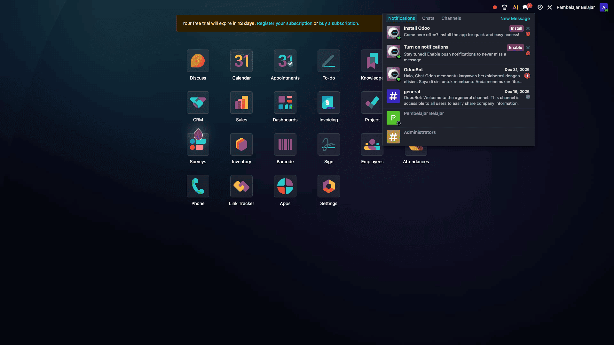
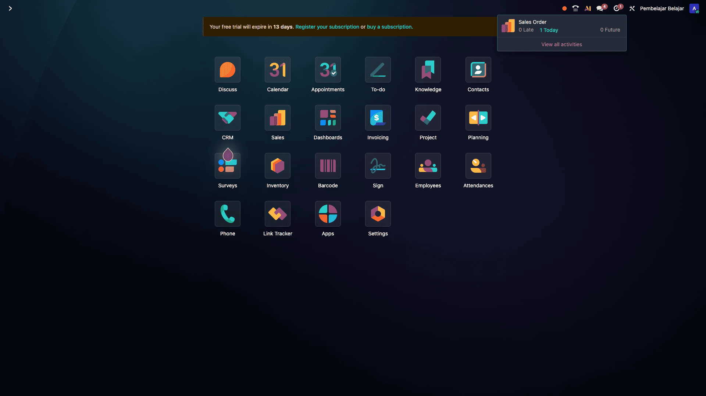
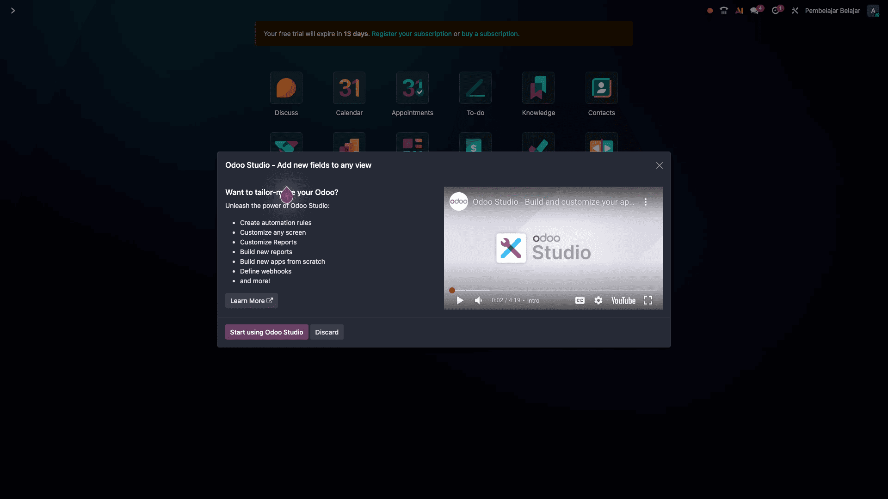
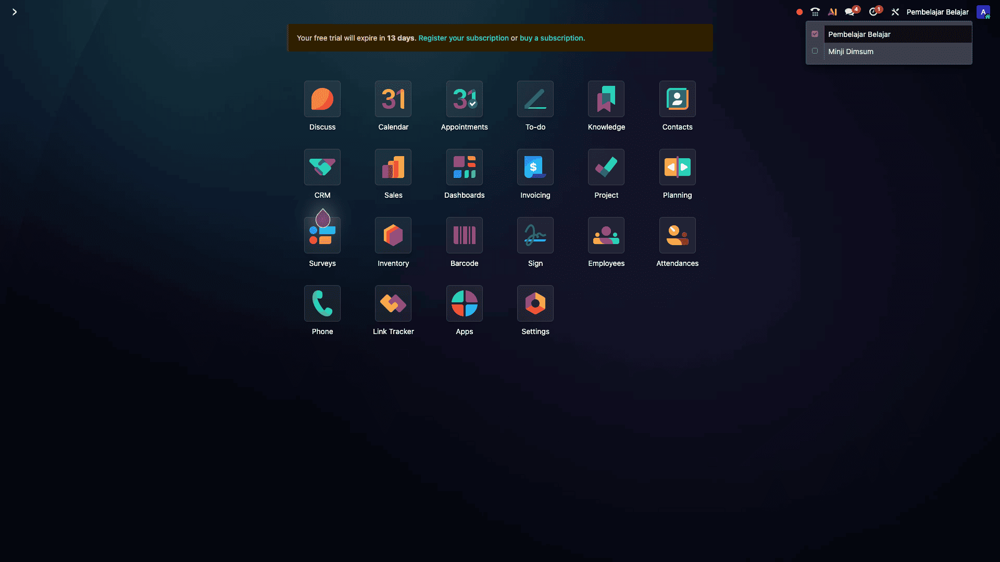

Di pojok kanan atas dashboard Odoo, terdapat serangkaian ikon navigasi. Mari kita bedah urutannya:
🔴 Attendance (Titik Merah)
Fitur ini digunakan untuk check-in (masuk) atau check-out (pulang) kerja secara cepat.

📸 Screenshot Ikon Titik Merah (materi-2-icon-attendance.png)📞 VoIP (Telepon)
Fitur Voice over IP. Memungkinkan Anda menelepon pelanggan langsung dari database Odoo.

📸 Screenshot Ikon Telepon/VoIP (materi-2-icon-voip.png)🤖 Odoo AI (Generative AI)
Fitur kecerdasan buatan untuk membantu menulis konten, memperbaiki tata bahasa, atau mengotomatisasi tugas dalam workflow Anda.

📸 Screenshot Ikon AI/Robot (materi-2-icon-ai.png)💬 Conversations (Chat)
Membuka modul Discuss. Di sini Anda bisa melihat chat internal tim, channel diskusi, dan notifikasi pesan.

📸 Screenshot Ikon Chat Bubble (materi-2-icon-discuss.png)🕘 Activities (Jam)
Pusat manajemen tugas. Menampilkan To-do list, jadwal meeting, atau deadline telepon/email yang harus Anda kerjakan hari ini.
Menu ini hanya berisi data jika Anda sudah menjadwalkan aktivitas.
Cara memunculkannya: Buka dokumen apa saja (misal: Kontak atau Sales Order), cari bagian Chatter (riwayat pesan), lalu klik tombol Activities > Schedule Activity.

📸 Screenshot Ikon Jam/Activities (materi-2-icon-activities.png)⚙️ Studio (Ikon Obeng & Tang)
Klik ini untuk masuk ke mode edit, dimana Anda bisa mengubah tampilan aplikasi atau menambah field baru secara visual.

📸 Screenshot Ikon Studio (materi-2-icon-studio.png)🏢 Multi-Company Toggle
Ikon ini memungkinkan Anda berpindah antar cabang atau entitas perusahaan yang berbeda dalam satu database tanpa harus logout.

📸 Screenshot Ikon Gedung/Perusahaan (materi-2-icon-multicompany.png)